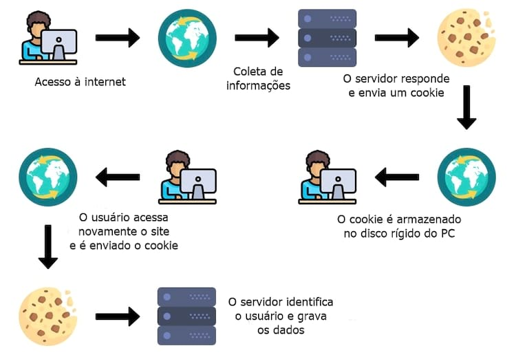

Os cookies têm muitas utilidades tanto para a empresa quanto para o usuário em questão, como por exemplo o melhor funcionamento de sites como o início de sessão automático. Também tem diversas utilidades dentro do marketing digital, por meio de ferramentas como o Google Analytics e o Google Ads, as empresas podem individualizar os dados dos consumidores e conseguirem publicidades mais personalizadas e eficientes para seus clientes.

Os cookies armazenam dados do usuário e informações de comportamento, permitindo serviços de publicidade para públicos-alvo com diversas variáveis, como:
Idade;
Gênero;
Interesses;
Tempo e comportamento nas redes sociais;
Localização;
Comportamento em seu site;
Comportamento nos motores de busca.
A partir disso a empresa pode conhecer melhor o consumidor e é possível criar campanhas muito mais personalizadas com a pessoa, oferecendo produtos que ela procura e gosta de consumir.
Um bom exemplo do uso de cookies para o marketing digital são as estratégias de retargeting/remarketing, ela consiste em mostrar anúncios com produtos já visualizados anteriormente ou são relacionados a compra e navegação anteriores.
A integridades de dados coletadas a partir dos cookies é de extrema importância para seus usuários, passando a visibilidade que as informações pessoais estão seguras na sua empresa, sabendo disso o usuário cria confiança e credibilidade, muito importante para que ele simpatize com a sua marca e consuma seus produtos ou serviços.